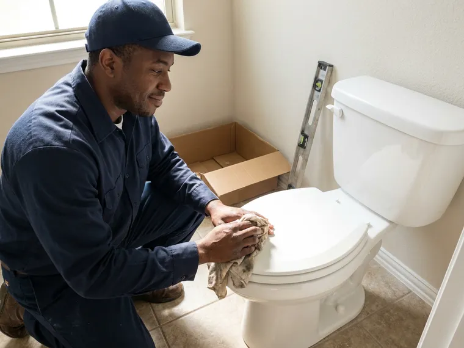
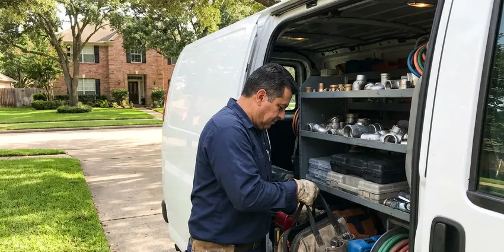

Plumbing Maintenance in Killeen, TX
Ensure your home's plumbing stays in top condition with professional maintenance from DFJ Plumbing in Killeen, TX. We help prevent costly repairs before they start.
- Fast, Reliable Service
- Licensed Plumbers
- Fair Upfront Pricing
- Local Texas Experts
Protect Your Home With Maintenance in Killeen, TX.
Contact us today to discuss your plumbing maintenance plan and keep everything flowing smoothly.
Expert Plumbing Maintenance Services Across Killeen, TX
At DFJ Plumbing, we understand the importance of preventative plumbing maintenance for homeowners in Killeen, TX. Our skilled technicians perform detailed inspections and tune-ups to ensure your pipes, fixtures, and appliances operate efficiently and safely.
Our expertise includes:
- Water heater flushes and anode rod checks.
- Sump pump cleaning and float switch testing.
- Water softener resin bed regeneration and valve inspection.

Additional Plumbing Maintenance Services in Killeen, TX
Our maintenance and specialty plumbing services in Killeen, TX catch small problems before they become emergencies.



Customers
Why Choose DFJ Plumbing for Plumbing Maintenance in Killeen, TX?
Choosing DFJ Plumbing for your plumbing maintenance means partnering with a team that knows Texas plumbing inside and out. We focus on long-term solutions, not just quick fixes.
- Preventative Care, Regular maintenance catches small problems like mineral buildup or minor leaks before they become costly emergencies.
- Extended Lifespan, Proper care significantly extends the operational life of your water heater, sump pump, and other plumbing appliances.
- Energy Efficiency, Well-maintained systems, especially water heaters, consume less energy, leading to lower utility bills for your home.
Citywide Coverage
DFJ Plumbing proudly serves every neighborhood in Killeen for all plumbing maintenance needs. From the historic districts to the newest developments, our expert plumbers are just a call away.
Experienced Team
Our team of licensed plumbers brings years of experience specifically with Texas plumbing systems. They are trained to identify and address issues unique to our climate and water quality, ensuring thorough maintenance.
Safety-First Approach
All plumbing maintenance performed by DFJ Plumbing adheres strictly to Texas plumbing regulations and safety protocols. We guarantee that your water heaters, sumps, and softeners are maintained correctly and safely.
Trusted Certified Killeen Plumbing Services Professionals
At DFJ Plumbing, we take pride in providing licensed, certified plumbing services throughout Killeen, TX. Backed by leading industry credentials, our experienced plumbers combine technical skill with genuine customer care. Whether it is repair, installation, or maintenance, we follow strict safety and quality standards to deliver long-lasting results you can trust.
Call Us Now PHCC Plumbing Contractor Recognition
PHCC Plumbing Contractor Recognition Better Business Bureau (BBB) Accreditation
Better Business Bureau (BBB) Accreditation Angi Certified Pro
Angi Certified Pro ISO 9001 Quality Management Certification
ISO 9001 Quality Management CertificationEssential Plumbing Maintenance Services in Killeen, TX
Water Heater Maintenance in Killeen
Regular water heater maintenance is crucial to prevent sediment buildup, which is common with hard water in many parts of Texas. Our service includes flushing the tank, inspecting the anode rod for corrosion, checking the temperature and pressure relief valve, and examining all connections and heating elements. This extends the life of your unit, improves efficiency, and helps avoid sudden cold showers or leaks.

Hot Water Tank Maintenance in Killeen, TX
Whether gas or electric, your hot water tank benefits significantly from annual maintenance. We check for proper burner operation, flue venting, and potential gas leaks on gas models, and inspect electrical connections and heating elements on electric units. Sediment flushing is a key part of our service, removing mineral deposits that can reduce heating efficiency and lead to premature tank failure, a frequent issue in Texas.
Tankless Water Heater Maintenance in Killeen
Tankless water heaters require specialized maintenance, primarily involving descaling to remove mineral buildup from the heat exchanger. This is particularly important in areas with hard water, like much of Texas. Our technicians use approved descaling solutions to ensure your tankless unit operates at peak efficiency, preventing reduced hot water flow and potential breakdowns. We also check gas lines, ventilation, and water connections.
Sump Pump Maintenance in Killeen, TX
Even in drier Texas climates, heavy rains can overwhelm drainage systems, making a functional sump pump vital for homes with basements or crawl spaces. Our maintenance includes testing the float switch, checking for proper discharge, cleaning the pit of debris, and inspecting the check valve. This ensures your sump pump is ready to protect your home from potential flooding when unexpected storms hit Killeen.
Water Softener Maintenance in Killeen
Water softeners combat the hard water prevalent in many Texas communities, protecting your pipes and appliances from mineral scale. Our maintenance service includes checking salt levels, cleaning the brine tank, ensuring the regeneration cycle is functioning correctly, and inspecting valves and resin beds. Proper softener maintenance prolongs its life and ensures your home continues to receive soft water, preventing costly scale damage.
Drain Line Inspections for Maintenance in Killeen
As part of comprehensive plumbing maintenance, we offer drain line camera inspections. This allows us to visually assess the condition of your main sewer lines, identifying potential blockages from roots or grease buildup, or structural issues like cracks and offsets exacerbated by shifting Texas soils. Early detection through inspection can prevent severe backups and expensive emergency repairs.
Commercial Plumbing Maintenance in Killeen, TX
Businesses in Killeen also rely on efficient plumbing systems. Our commercial plumbing maintenance services are tailored to the unique demands of commercial properties, including larger water heaters, multiple restrooms, and specialized equipment. Regular maintenance helps businesses avoid costly downtime, ensure compliance with health codes, and maintain a comfortable environment for employees and customers.

Preventative Leak Detection in Killeen, TX
Proactive leak detection is a key component of our plumbing maintenance. We use advanced tools to identify hidden leaks in pipes, especially those under slabs or behind walls, which are common issues in older Texas homes. Catching these leaks early prevents significant water damage, mold growth, and wasted water, saving homeowners in Killeen from extensive repairs down the line.
Plumbing Maintenance Near Me in Killeen, TX
When you search for "plumbing maintenance near me" in Killeen, TX, DFJ Plumbing is your trusted local expert. We are deeply familiar with the plumbing challenges faced by homeowners across the area, from hard water issues to foundation shifts.
Our proximity means we can respond quickly and efficiently to your plumbing maintenance needs. We are dedicated to serving our community with reliable, professional service, ensuring your home's plumbing remains in excellent condition.
DFJ Plumbing at a Glance
- Fully licensed plumbing team covering Killeen, TX
- 24/7 emergency service with same-day scheduling
- Upfront, flat-rate pricing before work begins
- 4.9-star rated by 812+ Texas customers
Killeen Map
Killeen Information
- Population
- 159,643
- Area codes
- 254/915/325
- Service area
- Killeen and communities within 40 miles
- Nearby
- Temple, Georgetown, Leander, Round Rock
Regular plumbing maintenance is especially important for homes in Killeen, TX, where hard water can lead to mineral buildup and expansive clay soils can cause foundation shifts that impact underground pipes.
Expert Services
Trust our professionals for reliable DFJ Plumbing solutions in Killeen, TX.
Our Specialized Plumbing Services in Killeen, TX
At DFJ Plumbing, we provide a complete range of plumbing services across Killeen, TX. From leak detection to full system installations, our team ensures fast, precise, and affordable service for both residential and commercial properties. Explore our core services below:


How Our Plumbing Maintenance Process Works in Killeen, TX
Our plumbing maintenance process is straightforward and designed to provide thorough care for your home's system.
Request a Quote
Call (737) 405-5978 or fill out our online form to schedule your plumbing maintenance service. Our team will gather details about your home and specific needs.
On-Site Inspection
A licensed plumber will arrive at your home to perform a comprehensive inspection of your plumbing system, identifying any potential issues.
Maintenance & Tune-Up
We will then perform the necessary maintenance tasks, such as water heater flushing, sump pump testing, or water softener checks, and provide recommendations.
Frequently Asked Questions About Plumbing Maintenance in Killeen
The cost for plumbing maintenance in Killeen can vary depending on the scope of work, but a basic water heater flush and inspection might range from $150 to $300. More comprehensive plans, including multiple appliances like water softeners or sump pumps, could be $300 to $600 annually. We provide upfront pricing before any work begins.
Yes, plumbing maintenance is crucial for managing hard water issues prevalent in many parts of Texas. We specifically focus on descaling tankless water heaters, flushing sediment from hot water tanks, and ensuring water softeners are functioning optimally to reduce mineral buildup throughout your plumbing system.
While some basic tasks like checking for visible leaks can be done by homeowners, professional plumbing maintenance is highly recommended. Our licensed plumbers have specialized tools, training, and knowledge of local codes to perform thorough inspections, diagnose hidden issues, and safely service complex appliances like gas water heaters and tankless units.
Generally, it is recommended to schedule a professional plumbing maintenance check-up at least once a year. For homes with older plumbing systems, hard water, or specific appliances like tankless water heaters, a semi-annual check might be more beneficial to prevent issues.
For routine plumbing maintenance such as flushing water heaters or testing sump pumps, permits are typically not required. However, if our inspection reveals a need for major repairs or component replacements, we will inform you if any local permits are necessary and handle the permitting process for you.
Our technicians are trained to service and maintain all major brands of water heaters, including Rheem, A. O. Smith, Bradford White, and Noritz (tankless). For water softeners, we work with brands like Culligan, Morton, Kenmore, and more. We handle a wide range of residential plumbing equipment.
Plumbing maintenance usually includes inspecting and flushing water heaters, testing sump pumps, checking water softeners, examining faucets and toilets for leaks, and evaluating exposed pipes. We also look for signs of corrosion, wear, or potential blockages in your drain lines.
Signs your plumbing needs maintenance include reduced water pressure, unusual noises from your water heater, slow drains, discolored water, or higher-than-normal water bills. Even subtle changes in how your plumbing operates can indicate an underlying issue that maintenance can address.
What People Are Saying About Our Plumbing Experts?

Laura S.
I scheduled a water heater replacement, and the team made the process smooth and affordable. The new unit works perfectly, and they cleaned up after completing the job.
Water Heater Replacement · Temple, TX
Mark T.
When our office needed drain cleaning, DFJ Plumbing provided quick, reliable service. The plumber arrived on time and made sure every drain flowed perfectly before leaving. Very satisfied.
Drain Cleaning · Temple, TX
Patricia H.
We had a slab leak that two other companies could not find. DFJ Plumbing located it in under an hour, explained our options, and the price matched the quote to the dollar.
Slab Leak Repair · Round Rock, TX
Emily R.
I called DFJ Plumbing for plumbing repair, and the technician was fast, polite, and thorough. They explained the problem clearly and fixed it the same day. I will definitely hire them again. Highly recommended!
Plumbing Repair · Pflugerville, TXSofia M.
Two new toilets installed in one visit, no mess left behind, and the tech even adjusted a faucet he noticed was dripping. Fair pricing and really friendly.
Toilet Installation · Killeen, TX
Robert G.
The trenchless sewer replacement saved our front yard. They walked us through the camera inspection footage first so we knew exactly what we were paying for.
Sewer Line Replacement · Cedar Park, TX